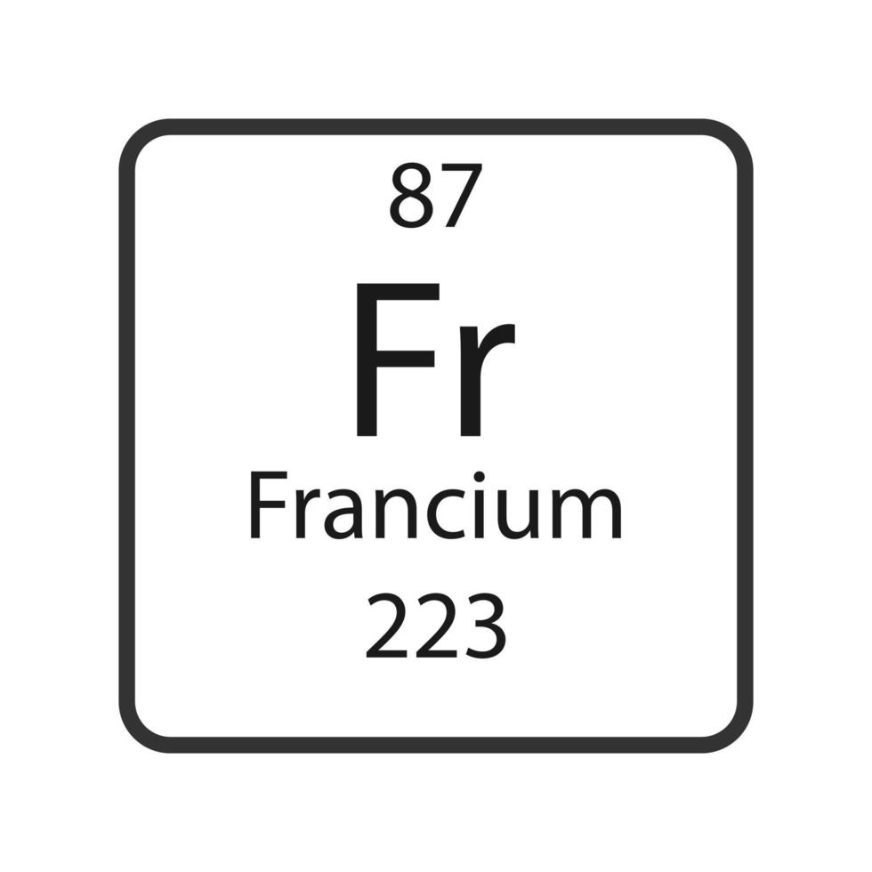
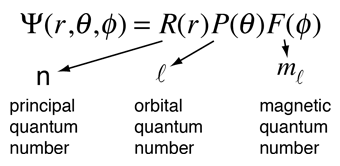
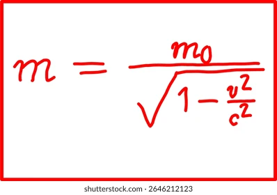
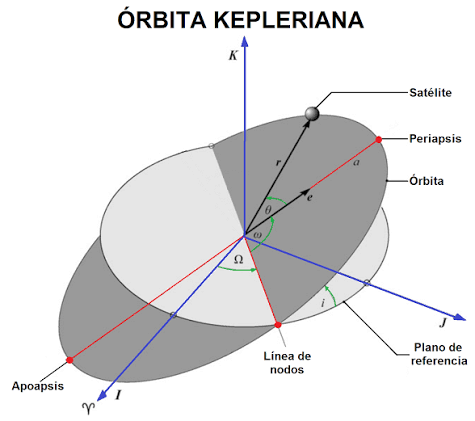

Entonces, ¿qué se puede decir sobre la reactividad del francio?
La tendencia periódica permite predecir que el francio sería muy reactivo, pero su posición al final del grupo no basta para establecer con certeza si reacciona con el agua más rápido que el cesio. En un átomo tan pesado, los efectos relativistas modifican la energía y la distribución de los electrones; los cálculos teóricos consideran estos efectos al estimar sus propiedades. Por eso, es más preciso presentar la comparación como una predicción, no como un resultado experimental confirmado.
Un orbital atómico describe la distribución de probabilidad de encontrar un electrón alrededor del núcleo; no representa una trayectoria fija. Sus formas y energías se obtienen al resolver la ecuación de Schrödinger para el átomo. Al aumentar el número de capas electrónicas, suele crecer el radio atómico, pero esto no significa que el tamaño por sí solo deforme todos los orbitales: la carga nuclear, el apantallamiento y las interacciones entre electrones también influyen.

La relatividad especial fue formulada por Albert Einstein en 1905 y la teoría general se presentó en 1915. En química, las correcciones relativistas son importantes sobre todo en átomos pesados: los electrones cercanos al núcleo pueden alcanzar velocidades para las que la descripción no relativista deja de ser suficiente. Estos efectos cambian las energías y el tamaño de algunos orbitales, y pueden influir en los enlaces y la reactividad. No implican una equivalencia exacta con un elemento situado dos grupos por encima; en el caso del francio, sus consecuencias se estudian principalmente mediante cálculos teóricos.


En resumen, la reactividad del francio con el agua no se ha medido directamente debido a su escasez y radiactividad. Los cálculos teóricos sugieren que podría ser más reactivo que el cesio, pero los efectos relativistas complican la predicción. Por lo tanto, la comparación entre ambos elementos se basa en estimaciones teóricas y no en resultados experimentales confirmados.